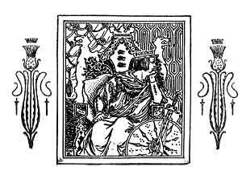

Sacred Texts Sagas & Legends England
|  |
A Book of Old English BalladsIllustrations by George Wharton Edwards
[1896] |
This collection of ballads contains some of the best known English folk lyrics. It is nowhere near as comprehensive as other books, such as the massive Child ballad collection. However, the illustrations are gorgeous, and the selection is excellent. It should be noted that 'Old English' in this case doesn't mean 'Anglo-Saxon'; strictly speaking these are written in late Middle or early Modern English. This makes them accessible, even enjoyable, for a modern audience.
Many of these are from the Scottish border, and deal with clashes between the English and Scots in historical times. Others are set in an idealized 'Old England', including three ballads of Robin Hood. The ballads surprisingly feature well-constructed female characters, who are participants in the action, not just part of the backdrop. These lyrics give some insights, often grim in nature, into the culture and mindset of the middle ages, particularly one (Hugh of Lincoln) with a regrettable anti-Semitic theme.
Some of these ballads go on for dozens of verses, and form complete short stories. If your only experience of these ballads is through modern folk-song renditions, you owe it to yourself to sit down and get the whole story.
--J.B. Hare
Title Page
Contents
Introduction
Chevy Chace
King Cophetua and the Beggar-Maid
King Leir and his Three Daughters
Fair Rosamond
Phillida and Corydon
Fair Margaret and Sweet William
Annan Water
The Bailiff's Daughter of Islington
Barbara Allen's Cruelty
The Douglas Tragedy
Young Waters
Flodden Field
Helen of Kirkconnell
Robin Hood and Allen-a-Dale
Robin Hood and Guy of Gisborne
Robin Hood's Death and Burial
The Twa Corbies
Waly, Waly, Love be Bonny
The Nut-brown Maid
The Fause Lover
The Mermaid
The Battle of Otterburn
The Lament of the Border Widow
The Banks o' Yarrow
Hugh of Lincoln
Sir Patrick Spens
![g'.г.Ail maiden ©uмонетი: ℞ubli© ძ'ommAin 🖼 ImageI by 'Art'hur R_AckHÅm' & All inclusive names to my Roots && me, me I.B.M.l. ასლაჼ კლდიაშვილი, А©ЛАჼ ©КЛიДиÅWвიЛи [1922], @novadays ი.ბ. АйбоЛит [Aibolem МЕЛОДИЯR₾ი მო'სი'კვÅჼ]](https://barionleg.github.io/db-sacred-texts.li/neu/ba_geo_f.png) |